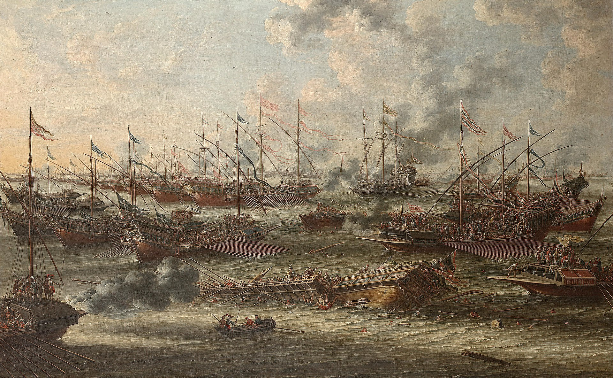
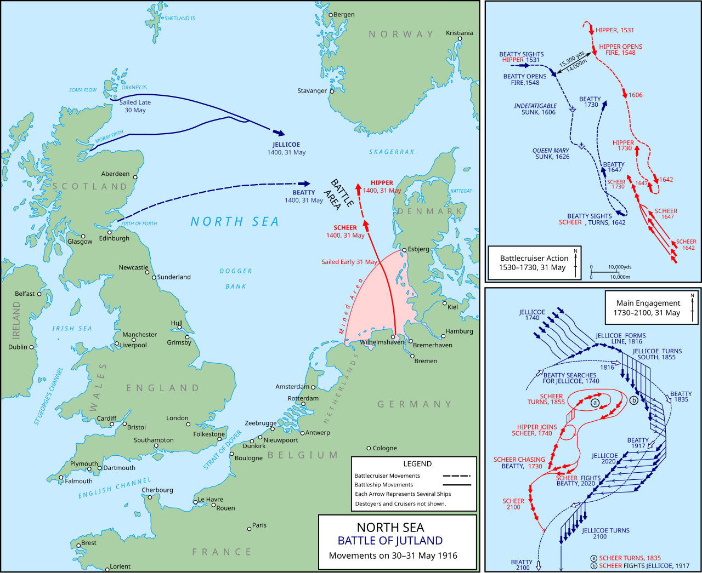
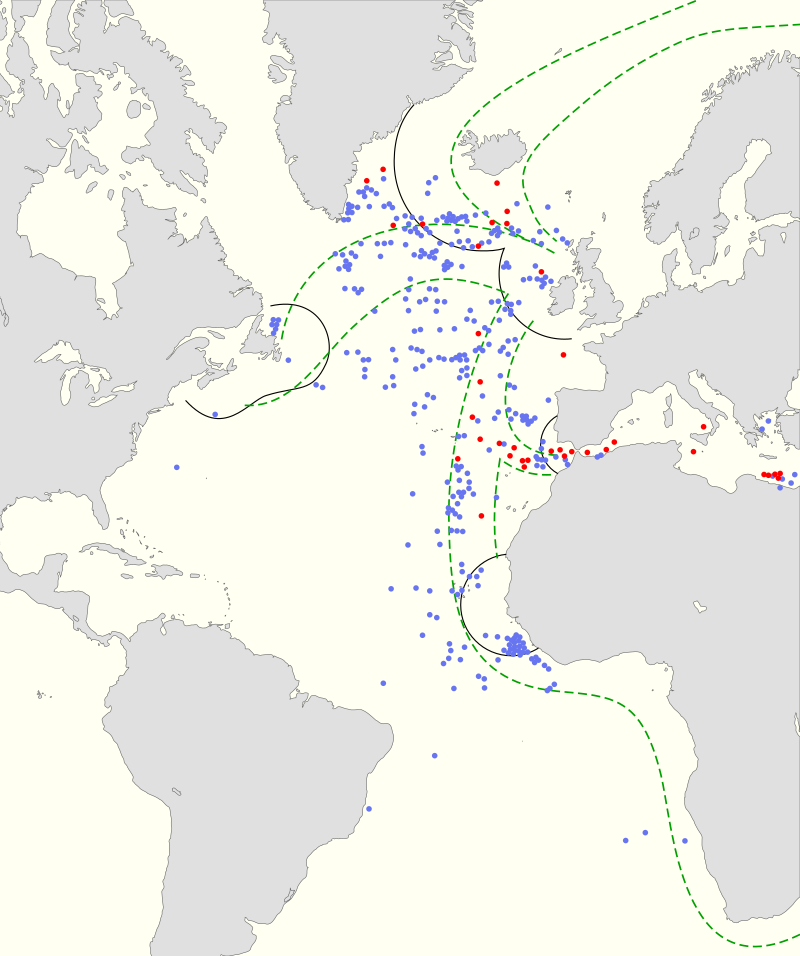
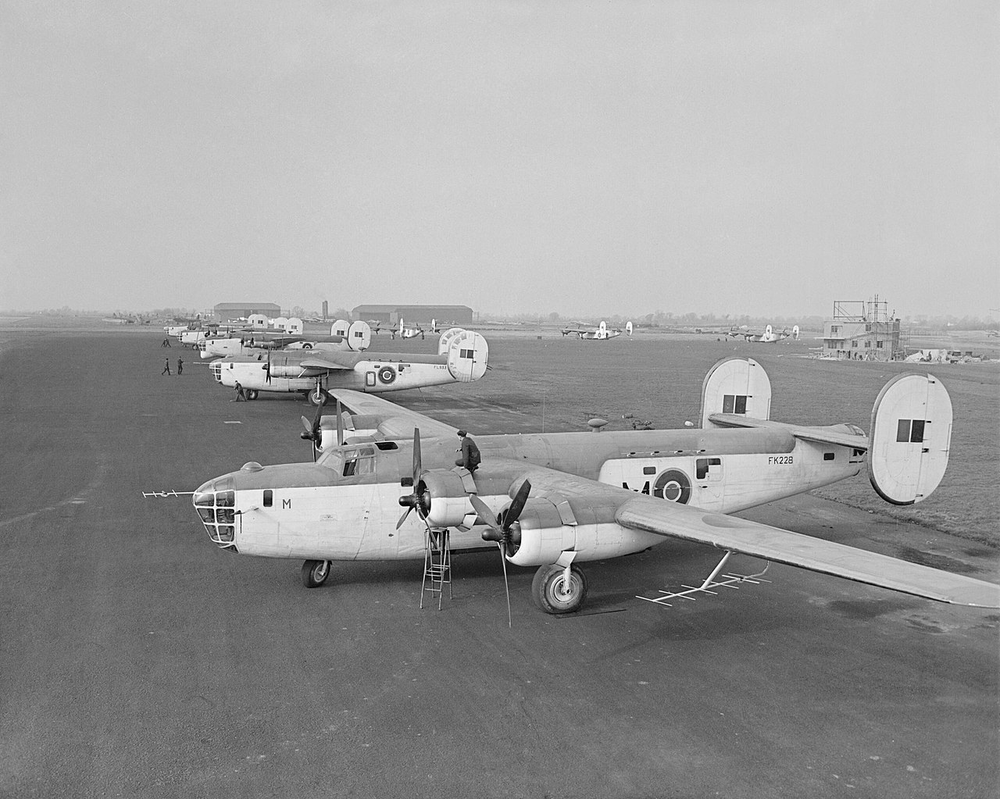
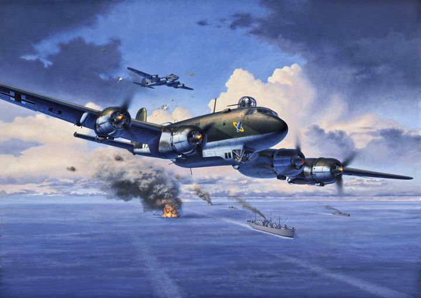

무선 침묵 이야기 (4) - 대서양 상공의 콘돌
게시: 2024-08-15T06:30:20+09:00
<역사 속 유명 해전들의 공통점> 해군은 군함을 타고 싸우는 군대가 아니라 바다에서 싸우는 군대. 그러니까 해군이 꼭 군함으로 싸울 이유는 없으며 항공기를 이용하기도 하고, 지상에서 싸우기도 함. 가령 1982년 포클랜드 전쟁에서 영국해군 구축함 HMS Glamorgan을 타격한 Exocet 미사일은 포클랜드 해안 근처 언덕에 숨어있던 엑조세 미사일 임시 발사대에서 아르헨티나 해군 요원들이 쏜 것. 원래 그 엑조세 미사일과 그 발사대는 아르헨티나 구축함 ARA Segui에 달려 있던 것을 떼어내 C-130 수송기로 실어왔던 것.

(당시 아르헨티나 해군이 급조해서 만든 지상 이동형 엑조세 미사일 발사대.) 그런데 고대 아테네와 페르시아가 싸운 살라미스(Salamis) 해전, 베네치아를 주축으로 한 서유럽과 오스만 투르크가 붙은 레판토(Lepanto) 해전, 영국과 프랑스-스페인이 맞붙은 트라팔가(Trafalgar) 해전, 그리고 이순신 장군의 해전들까지 포함하여 역사적인 해전들을 보면 공통점이 있음. 바로 싸운 곳이 육지 근처, 그것도 유명한 항구 근처라는 것. 대체 왜 그렇게 먼 바다에서 싸우지 않고 항구 근처에서 싸웠을까? 혹시 포클랜드 전쟁의 아르헨티나 해군처럼 해상의 적을 지상에서 공격하려 했던 것일까?

(1571년 레판토 해전. 해전 장소는 이오니아해의 코린트만 입구, 그러니까 그리스의 서해안.) 이유는 의외로 간단. 먼 바다에서 싸우자면 바다가 너무 넓어서 두 함대가 서로를 찾기가 너무 어려웠기 때문. 그래서 보통 적 함대가 꼭 지나갈 만한 곳을 지키고 있다가 들이쳐야 했는데, 그런 곳은 대개 항구 근처이거나 좁은 해협 같은 곳이기 마련. 하지만 그건 범선 시절 이야기이고, 근대적인 해전은 바다 한 가운데서도 벌어지지 않나? 상대적으로 더 먼 바다에서 벌어지기는 하지만 여전히 주요 항구나 섬, 해협 주변에서 벌어지는 것은 여전. 유틀란트(Jutland) 해전도 그랬고 진주만 습격도 그랬으며 미드웨이 해전, 산타 크루즈 해전 등도 마찬가지.

(1916년 벌어진 유틀란트 해전은 독일해군 힘대가 근거지를 벗어나지 못하도록 꽁꽁 틀어막고 있던 영국해군 함대를 격파하고 대서양으로 나가려던 독일해군이 기획한 전투. 이 때도 이미 함재 수상기를 정찰용으로 사용했기에 비교적 먼 바다에서도 서로의 존재를 포착할 수 있었음. 그런데 영국 함대는 왜 우세한 전력을 이용하여 독일해군 항구로 쳐들어가지 못했을까? 실은 독일해군도 그걸 걱정하여 Heligoland Bight (위 지도에서 분홍색으로 표시된 만) 지역에 기뢰를 잔뜩 깔아놓았기 때문.) <역사상 최초의 대양 전투> 그런데 정말 육지와는 별 상관없는 먼 대양에서 벌어진 해전이 있음. 바로 Battle of the Atlantic. 대서양 해전이라는 이 어마어마한 이름은 WW2 중 벌어진 독일해군 U-boat의 수송선단 사냥과 그 유보트들을 잡아내려는 미영 연합해군간의 싸움에 붙여진 이름으로서, 어느 특정 교전 하나를 가리키는 이름이 아니라 1939년 9월부터 1945년 5월까지의 거의 6년간 벌어진 일련의 전투들을 가리키는 것.

(Battle of the Atlantic이 벌어진 장소들. 저 지도에서 보이는 파란 점들이 연합군 선박들이 격침된 곳. 검은색으로 그려진 호(arc)들은 지상발진 연합군 해양초계기의 작전 범위. 당시 항공기들의 항속거리 때문에 미국 해안과 영국, 아이슬란드 해안 사이의 대서양은 연합군 해양초계기가 공중 엄호를 못 해주는 구역이 상당히 넓었는데, 이를 보통 the Gap (간격), 혹은 the Mid-Atlantic Gap이라고 불렀음. 미해군은 많은 수의 호위항모를 만들어 그 간격을 매우려 노력.) WW2 초반에 U-boat에게 고전하던 미영해군은 공대함 레이더 ASV를 장착한 해양초계기를 전개시키고 많은 수의 호위항모를 만들어 대서양 한복판에서도 항공 엄호를 해주면서 전세를 역전. 결국 연합군이 완전히 승기를 잡은 것은 1943년 5월, 공대함 레이더 ASV를 장착한 B-24 Liberator VLR (Very Long Range)가 캐나다 공군에 보급되면서 캐나다 동해안 뉴펀들랜드에서 출격을 시작하며 대서양 한복판까지 날아갈 수 있게 되어 the Mid-Atlantic Gap을 완전히 없애버린 순간부터였음. 이는 제해권에 있어서 제공권이 얼마나 중요한지를 보여주는 부분. 바다가 워낙 넓다보니 빠른 속력으로 멀리까지 감시하려면 항공기가 반드시 있어야 했기 때문. 이렇게 미영해군이 공대함 레이더를 이용하여 U-boat 사냥을 하는 과정은 이미 전에 다룬 바 있으니 이렇게 미영해군이 공대함 레이더를 이용하여 U-boat 사냥을 하는 과정은 이미 전에 다룬 바 있으니 https://nasica1.tistory.com/660 등을 참조.

(이건 영국공군 연안 사령부(RAF Coastal Command) 소속 B-24 Liberator들. 아직 초기의 공대함 레이더인 ASV Mk.II 안테나가 달린 것이 보임.) 그런데 여기서 의문이 들어야 함. 미영 해군이 드넓은 대서양 한복판에서 U-boat를 찾아내기 위해서 항공기와 공대함 레이더를 이용했다고 했는데, 대체 U-boat는 어떻게 연합군 수송선단을 찾았을까? 수상함이 잠수함을 찾는 것도 어렵지만 잠수함이 수상함을 찾는 것도 매우 어려움. 컴퓨터가 신호 처리를 해주는 요즘과는 달리 WW2 당시 passive sonar는 성능이 매우 떨어졌음. 잠망경을 내밀고 사방을 둘러봐야 수상함에서 망원경으로 찾는 것보다 훨씬 불리. 시야는 관측점의 높이가 높을 수록 더 멀리까지 볼 수 있는데, 해면 위 몇십cm의 잠망경이 구축함 함교의 십여m 높이에서 보는 거리를 넘어설 방법이 없음. 그래서 독일해군도 미영해군처럼 항공기를 이용했음. 하지만 U-boat에서 정찰기를 띄울 수는 없으므로, 노르웨이나 프랑스의 지상 기지서 발진하는 해양초계기를 사용. 바로 Focke-Wulf Fw 200 Condor. 원래 대서양을 건널 수 있는 여객기로 개발된 이 대형 4발 항공기는 (비행선 아닌 항공기 중에서는) 1938년 역사상 최초로 베를린-뉴욕을 논스톱으로 25시간 만에 주파한 기록을 가지고 있을 정도로 장거리 비행이 가능하여 해양초계기로 딱 적격. 독일공군 루프트바페도 처음부터 이 항공기를 독일해군 크릭스마리너(Kriegsmarine) 지원에 할당.

(독일 항공기들이 대부분 잘 생긴 편인데, Focke-Wulf Fw 200 Condor는 특히나 더 아름다운 항공기. 독일 외무부 장관인 리벤트롭(Joachim von Ribbentrop)이 1939년 독소 불가침 조약 협상을 위해 모스크바를 방문할 때도 이 항공기를 이용.) 이 포커-불프 Fw 200 콘도르의 역할은? 바로 대서양 한복판을 날아다니며 연합군의 선박을 찾아내는 것. 폭탄을 1톤까지 실을 수 있어서 직접 공격하기도 했고, 그래서 1941년 2월까지 약 36만톤 배수량에 달하는 연합군 선박을 격침시키기도 했지만, 가장 중요한 역할은 찾아낸 선박의 위치를 U-boat들에게 알려주는 것. 윈스턴 처질은 콘도르에 대해 콕 집어 'Scourge of the Atlantic' (대서양의 재앙)이라고 지칭. 그런데 물 속에 들어있는 잠수함에게 어떻게 연합군 선박의 위치를 알려주었을까? 거기서 독일해군과 미영해군의 치열한 머리 싸움과 기술 싸움이 벌어짐.